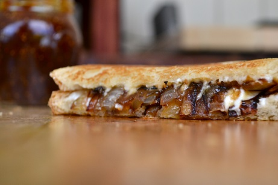

Heavy Grilled Cheese
- Bread of your choice
- Cheese(s) of your choice (recommended:
American, Swiss, and other non‐artisanal cheeses)
- Butter
- Diced Onion
- Deli meat slices
- Mustard
Cooking Instructions
- Turn stovetop to medium‐high heat
- Add a small dollop of butter to a frying pan, then apply pan to heat
- While the butter melts, spread a small amount of mustard on two pieces of bread
- Add onions to pan and stir frequently
- As the onions brown, stack the sandwich with your cheese, meat, and any other additives
- Once the onions have reached a slight crisp, spoon them out of the pan and onto the sandwich
- (If needed, add some extra butter to the pan) Add sandwich to pan; flip after the bottom has browned
- Once the sandwich has finished frying, remove it from the heat and serve immediately